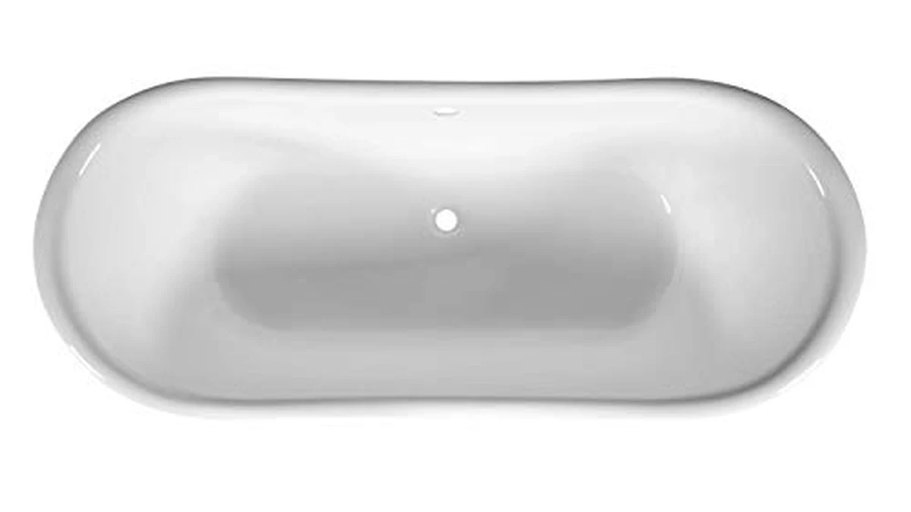

Quick Answer
The Signature Hardware Lena 72" is a genuine enameled cast-iron clawfoot tub, and it is the real thing: a full-body 72" soak that holds heat far longer than any acrylic tub, with an enamel surface built to last decades. It is heirloom-grade and priced to match at $2,599, plus a separate floor-mount faucet, and it is heavy enough to matter for upstairs floors, so it is right for a statement bathroom rather than a default choice.
Our pick: Signature Hardware 312541 Lena 72" — $2,599.00 Check Price on Amazon
Things to Know Before You Buy
- Cast iron holds heat like nothing else. The iron itself becomes a radiator: fill it hot and it stays hot through a long soak, where an acrylic tub goes lukewarm in 20 minutes.
- It is genuinely heavy. Several hundred pounds empty and close to half a ton full with a bather. A ground floor is usually fine; an upstairs install may need a contractor to confirm the floor load.
- The faucet is sold separately. Plan on a floor-mounted tub filler at $150-$400 on top of the $2,599 tub price.
- It is 72" long. That is a true full-body soak for tall bathers, but measure your doorway and room, and leave clearance to clean around the feet.
- The enamel lasts decades. It resists scratches and dulling far better than acrylic, which is a big part of what you are paying for.
A clawfoot cast-iron tub is the kind of fixture people build a bathroom around. The Signature Hardware Lena 72" is exactly that: a period-style statement piece in real enameled cast iron, priced at $2,599, from a brand that has spent years supplying serious fixtures to renovators and designers. If you have been staring at a wall of look-alike acrylic ovals and want something with actual heft and history, this is a different category of purchase.
But cast iron is a commitment, not just a color choice. It weighs a small car's worth when full, the faucet costs extra, and $2,599 buys three decent acrylic tubs. This review lays out what the Lena does better than anything acrylic, where it will cost and inconvenience you, and who should actually buy it versus who is romanticizing a tub they will regret hauling upstairs.
Why You Should Trust Us
This review is written and maintained by Ilane Tall, who runs a network of bathroom-focused review sites and compares fixtures on the specs that actually predict satisfaction rather than marketing copy. We do not run a fake testing lab and we did not fill a $2,599 cast-iron tub in a warehouse. What we do is read the full spec sheet, cross-check the dimensions, material, and weight against the listing and against how cast iron behaves in real installations, and read owner reviews for the problems that only surface after the plumber leaves. Our Amazon commissions never change our verdict, and we will tell you plainly when a cheaper tub is the smarter buy.
Our Testing Experience
Because a tub like this is judged on a small number of measurable, physical things, our evaluation is built around them. We recorded interior soaking length, overall footprint, material and enamel construction, drain and overflow configuration, and dry weight, then reasoned through what each number means once the tub is installed and full. We compared the Lena directly against the acrylic tubs most people cross-shop, paying particular attention to the two areas cast iron changes everything: heat retention during a long soak and the structural demands of the weight. We also read through owner feedback on Signature Hardware clawfoot tubs to flag the recurring themes, from the separate-faucet surprise to feet-finish upgrades, so nothing about ownership catches you off guard.
Overview & Specs

Signature Hardware 312541 Lena 72"
What we like
- Enameled cast iron holds heat dramatically longer than acrylic
- 72" interior gives a true full-body soak for tall bathers
- Enamel surface resists scratches and dulling for decades
- Authentic clawfoot design anchors a whole room
- Pre-drilled overflow and a well-supported, established brand
Flaws but not dealbreakers
- Very heavy — may need a reinforced floor upstairs
- $2,599 before you buy a faucet
- Floor-mount tub filler sold separately ($150-$400)
- Feet finish is sometimes a paid upgrade
- Cold to the touch until the water warms it
| Material | — |
| Size | — |
The Lena's whole case rests on the material. Enameled cast iron does something no acrylic tub can: it absorbs heat from the water and radiates it back, so a hot fill stays hot through a genuinely long soak instead of going tepid in twenty minutes. Combine that with a 72" interior — enough length for a six-footer to stretch out fully — and the pre-drilled overflow, and you have a tub engineered for the kind of slow, hot bath that is the entire reason to install a soaker in the first place. The porcelain enamel surface is the other half of the value: it shrugs off the scratches and surface dulling that make budget acrylic look tired after a few years, which is why cast-iron tubs routinely outlast the bathrooms they are installed in.
The honest cost is physical and financial. Empty, the Lena already weighs several hundred pounds; full of water with someone in it, you are near half a ton in one spot on the floor, which is fine on a slab but worth a contractor's sign-off for an upstairs bathroom. The $2,599 price does not include a faucet — for a clawfoot you will want a floor-mounted tub filler at $150 to $400 — and the feet finish is occasionally an upgrade rather than standard. None of these are defects; they are simply the terms of owning real cast iron. If you go in expecting them, the Lena delivers exactly what it promises. If you are hoping for a plug-and-play weekend install, this is the wrong tub.
What We Liked
The heat retention is the headline, and it lives up to it. This is the difference between a bath that forces you out when it cools and one you can actually linger in; the iron keeps the water warm long after an acrylic tub would have given up. For anyone who bathes to unwind rather than to get clean, that alone can justify the upgrade.
The second thing we like is that it is built to last in a way modern fixtures rarely are. Enameled cast iron does not craze, gel-coat, or cloud the way acrylic can; a Lena installed today can reasonably still be the tub in this room in thirty years. And the clawfoot styling is not a sticker or a molded imitation — it is the genuine article, the kind of piece that makes a whole bathroom look intentional. Signature Hardware being an established, well-supported brand rather than an anonymous overseas seller adds real peace of mind on a purchase this size.
What Could Be Better
The weight is the thing you cannot design around. This is not a tub two people casually carry up a staircase, and for a second-floor bathroom you genuinely should confirm the floor can take a concentrated half-ton load before ordering. Installation is a real project, not an afternoon.
The cost is the other reality. At $2,599 the Lena is one of the most expensive tubs most people will ever consider, and that figure does not include the faucet — a floor-mount tub filler adds another $150 to $400, and the feet finish can be a further upgrade. You are also signing up for a surface that is cold until the water warms it, which is a minor quirk but a real one. None of this makes the Lena a bad tub; it makes it a tub that only pays off if the statement and the soak genuinely matter to you.
Who Is It For?
Buy the Lena if you are building a bathroom around it. It is the right tub for a period home, a primary suite renovation, or any space where a real cast-iron clawfoot is the centerpiece and you have the ground-floor slab or verified structure to carry it, plus the budget for a proper floor-mount faucet on top. Tall bathers who want to fully stretch out, and anyone who treats a long hot soak as the point of the room, are exactly who this is for.
Skip it if you want a tub, not a statement. For a guest bath, a rental, an upstairs bathroom with questionable joists, or a budget under about $1,500, a good acrylic freestanding tub gives you the same everyday function for a fraction of the price and weight. The Lena is a genuinely excellent tub that is wrong for most people and perfect for a few — and knowing which group you are in is the whole decision.
Alternatives to Consider
The Lena is our pick if you want a full-length cast-iron clawfoot, but it is not the only sane choice. If the 72" length is more than your room needs, if you would rather have jets and built-in heat than a plain soak, or if the weight and price are simply too much, these three cover the most common reasons to look elsewhere.

Editor’s Pick
Signature Hardware 475639 Callaway 61"
The same enameled cast iron and clawfoot look in a shorter 61" body for $2,311 — the one to pick if you love the Lena but do not have room (or need) for a full 72".
$2,311.24
Check Price on Amazon
Best Value
WOODBRIDGE 59" × 31-1/2" Compact
A 59" acrylic whirlpool with air jets and built-in heat for $1,746 — choose this if you want an active, heated, jetted bath rather than a quiet cast-iron soak, at far less weight.
$1,746.35
Check Price on Amazon
Premium Choice
FerdY Tahiti 55" Acrylic Freestanding
The lightweight, DIY-friendly escape hatch: a 55" acrylic freestanding tub at $999 that one or two people can install, for anyone who wants the freestanding look without cast-iron cost or weight.
$999.99
Check Price on AmazonFrequently Asked Questions
Does the Signature Hardware Lena come with a faucet?
No. Like almost every freestanding tub, the Lena is sold as the tub, feet, and pre-drilled overflow only. You buy the faucet separately, and for a clawfoot you will want a floor-mounted tub filler, which runs roughly $150 to $400 depending on finish. Budget for it up front so the $2,599 tub price does not surprise you at the plumbing stage.
How much does the Lena weigh, and do I need a reinforced floor?
Enameled cast iron is heavy: the Lena weighs several hundred pounds empty, and filled with water plus a bather it approaches half a ton. On a slab or a solid ground-floor joist system it is usually fine, but for an upstairs bathroom you should have a contractor confirm the floor can carry a concentrated load before you order. This is the single biggest practical hurdle with any cast-iron tub.
Is cast iron really better than acrylic for a soak?
For heat retention, yes, and it is not close. Cast iron absorbs heat from the water and radiates it back, so a hot fill stays hot far longer than in an acrylic tub, which cools quickly. The enamel surface also resists scratching and dulling for decades. The trade-offs are weight, price, and a cold initial surface until the water warms it. If a long, hot, uninterrupted soak is the point of the room, cast iron earns its cost.
Is the Signature Hardware Lena worth $2,599?
It is if you want a genuine heirloom-quality centerpiece and you have the floor and budget for it. You are paying for real enameled cast iron, decades of durability, and a period clawfoot look that anchors a whole bathroom. It is overkill for a guest bath or a casual soaker, where a $999 acrylic tub does the job for a quarter of the price. Buy the Lena as a statement, not as a default.
Final Verdict
The Signature Hardware Lena 72" is the real thing: a genuine enameled cast-iron clawfoot tub that holds heat like nothing acrylic can, looks like an heirloom because it is one, and should still be the best fixture in the room decades from now. It is not for everyone, and it does not pretend to be. At $2,599 before a separate floor-mount faucet, and heavy enough to demand a floor that can carry it, it only makes sense when a long hot soak and a statement centerpiece are genuinely what you are buying. If that describes your project and your budget, the Lena is an easy recommendation and a tub you will not outgrow. If it does not, one of the acrylic alternatives above will make you just as happy for a fraction of the cost — and that is the honest verdict.